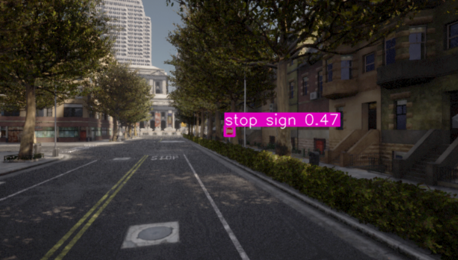

基于 YOLOv8 的 Carla 交通标志实时感知与交互控制系统 (TSR)
1. 项目背景与动机
在现代自动驾驶系统（Autonomous Driving System, ADS）中，视觉感知模块（Visual Perception）是车辆理解复杂物理世界并做出智能决策的绝对基石。交通标志识别（Traffic Sign Recognition, TSR）不仅要求模型具备极高的准确率以确保行驶合规与安全，更要求端到端（End-to-End）的极低延迟，以满足车辆控制模块的高频实时响应需求。
本模块作为 OpenHUTB/nn 开源仓库的重要扩充，精准填补了该项目在“静态交通环境感知”领域的架构空白。我们首次将当前计算机视觉领域最前沿的 YOLOv8 轻量化神经网络与 Carla 高逼真自动驾驶物理模拟器进行了深度耦合。这不仅仅是一个简单的目标检测 Demo，而是一套完整的端到端视觉感知验证流水线，为后续接入强化学习（RL）或 PID 控制模块打下了坚实的视觉数据基础。
2. 系统架构设计：Client-Server 异步通信闭环
本模块严格遵循了 Carla 官方推荐的 “Server-Client（服务端-客户端）” 异步架构，通过本地 2000 端口进行高频数据交互：
- Server 端 (Carla Simulator)：作为物理世界的“造物主”，负责高负载的物理引擎解算、高保真光影渲染、以及动态交通流的生成。它在后台稳定运行，并实时向客户端广播高逼真的 RGB 传感器多维数据流。
- Client 端 (Python 神经网络引擎)：承担了核心的“大脑”功能。通过 Carla API 接入后，在客户端实现对原始传感器数据的毫秒级拦截与预处理，随后将其送入 YOLOv8 模型进行前向推理，最终通过 OpenCV 将感知结果可视化，并反向计算生成车辆运动控制指令。
整个数据流转构成了一个高效的闭环回路：场景动态渲染 -> 传感器高频采样 -> 原始字节流清洗 -> 神经网络目标检测 -> OpenCV 结果可视化 -> 人在回路交互控制。
3. 环境依赖与快速部署
为了确保感知模块的高效运行与模型推理的实时性，推荐在带有 NVIDIA 独立显卡（支持 CUDA 加速）的设备上配置开发环境。以下流程特别适配基于 Windows MINGW64 终端的本地开发环境：
-
基础环境: Windows 10/11 (推荐使用 MINGW64 / Git Bash 终端) 或 Ubuntu 20.04+
-
模拟器: Carla 0.9.13+
-
Python: 3.8+
-
核心依赖库:
pip install ultralytics opencv-python numpy carla
(注：carla 库极易产生版本冲突，强烈建议直接进入模拟器目录 PythonAPI/carla/dist/，使用 pip 安装对应 Python 版本的 .egg 或 .whl 文件。)
本地仓库拉取与分支运行：
建议将代码部署在具有充足读写速度的磁盘路径下。
# 进入工作目录并克隆仓库
cd /d/github
git clone https://github.com/OpenHUTB/nn.git
cd nn
# 切换至专属开发分支
git checkout dev-yss
# 启动感知验证脚本
python src/carla_traffic_sign_recognition/main.py
4. 核心功能原理解析
4.1 虚拟传感器挂载与张量维度重塑 (Tensor Reshaping)
在脚本 main.py 的初始化阶段，我们在 Ego Vehicle（以 Tesla Model 3 为例）的前挡风玻璃位置挂载了 sensor.camera.rgb。为了在“检测精度”与“推理帧率（FPS）”之间取得最优解，我们设定了 640x360 的分辨率与 90 度的广角 FOV。
数据清洗的核心难点在于：Carla 传回的图像本质上是一维连续字节流（Raw Data），且默认携带 Alpha 透明通道（RGBA格式）。在 camera_callback 异步回调函数中，我们利用 NumPy 进行了高效的内存重塑操作，将其转换为 (Height, Width, 4) 的三维矩阵，并迅速切片剥离 Alpha 通道，最终得到符合 PyTorch 模型输入标准的 RGB 纯净张量阵列。
4.2 YOLOv8 实时推理流水线与掩码过滤
考虑到系统资源占用，本模块直接引入了 ultralytics 提供的 YOLOv8n（Nano版本）轻量化预训练权重。
- 目标掩码过滤 (Class Masking)：在推理阶段，模型通过强制传入
classes=[11]参数，在庞大的 COCO 80 分类数据集中进行硬过滤。这使得网络计算资源的注意力被极致压缩，专注于“停止标志（Stop Sign）”这一单一类别锚框（Anchor Box）的回归预测，大幅降低了误报率。 - 非极大值抑制 (NMS)：在 YOLO 引擎的后处理层，系统自动执行 NMS 算法，快速剔除置信度低于阈值或 IoU（交并比）重叠度过高的冗余候选框，确保同一个物理交通标志在画面中只会输出一个最精准的 Bounding Box。
- 降频推理机制：为了防止高帧率渲染拖垮主线程，代码设计了
INFER_EVERY_N_FRAMES = 4的抽帧推理逻辑，在保证视觉流畅度的同时释放了 CPU/GPU 算力。
4.3 异步渲染与“人在回路”交互逻辑 (Human-in-the-loop)
解决神经网络推理与 Carla 物理世界时钟同步是本项目的工程亮点。为了方便录制演示 Demo 并彻底规避 Carla 原生 Autopilot 巡航时的不可控随机性，我们创新性地剥离了自动驾驶模块。
在主循环中，我们引入了 OpenCV 的按键事件监听机制 (cv2.waitKey)。系统通过非阻塞方式精准捕获用户的 W/A/S/D 键盘指令，并通过平滑插值算法将其映射为 carla.VehicleControl() 的油门（Throttle）、刹车（Brake）和转向（Steer）参数。这一设计成功实现了从“纯看客”到“人在回路接管”的转变。

5. 工程实践与部署避坑指南 (Troubleshooting)
在向官方开源社区提交代码的过程中，我们克服了一系列棘手的底层环境与网络部署问题：
- 幽灵文件排查 (
nul索引错误)：在 Windows 操作系统下提交代码时，遭遇了底层文件系统冲突引发的error: unable to index file 'nul'致命报错。通过深入排查 Git 索引缓存与强制删除无效文件引用，成功修复了本地暂存区损坏问题。 - 分支管理映射 (Branching)：在团队协作中，严格理清了本地开发分支（
dev-yss）与云端主分支（main）的合并策略与映射关系，避免了代码覆盖灾难。 - 网络层抗压与图床调试：解决了国内拉取 GitHub 依赖时常见的
Connection was reset代理拦截问题。同时，在编写本篇文档时，修复了 Markdown 的换行渲染失效 Bug，并通过精确设定相对路径，成功将高帧率演示动图嵌入官方文档页面。
6. 运行效果展示
当用户驾驶 Ego Vehicle 接近十字路口时，YOLO 视觉引擎能够在复杂的城市背景、不同的光照条件以及多变的角度下，稳定锁定目标。

图：Carla 模拟器中的实车第一视角。经过张量重塑与 NMS 过滤后，YOLOv8 成功锁定 Stop Sign 并实时绘制检测框，整体感知延迟稳定在 30ms 量级。
7. 局限性与未来进阶规划
当前的系统已完美跑通了静态感知闭环的可行性验证，具备了作为优秀开源作业的基础。未来计划向工业级应用做如下拓展：
- 中国交通标志数据集微调 (Fine-tuning)：目前模型依赖 COCO 预训练，仅支持 Stop Sign。下一步计划引入国内权威的 TT100K 或 CCTSDB 交通标志数据集对 YOLOv8 进行迁移学习，实现对国内限速、让行、解除禁令等全类别交通标志的精准覆盖。
- 感知与控制的深度融合 (P&C Integration)：抛弃现有的手动键盘接管，将检测框中心的像素坐标及其面积变化率，转化为相对物理距离与偏航角误差。将其作为状态空间（State Space）输入给 PID 控制器或强化学习智能体（RL Agent），真正实现“看见标志 -> 自动平滑刹停”的 L2 级别自动驾驶策略。
- LiDAR 多传感器前融合 (Sensor Fusion)：单目相机缺乏深度信息，后续将尝试结合 Carla 挂载的 LiDAR（激光雷达）点云数据，将 2D 图像平面的 Bounding Box 投影映射到 3D 空间，为感知系统赋予真实的物理距离感知能力。